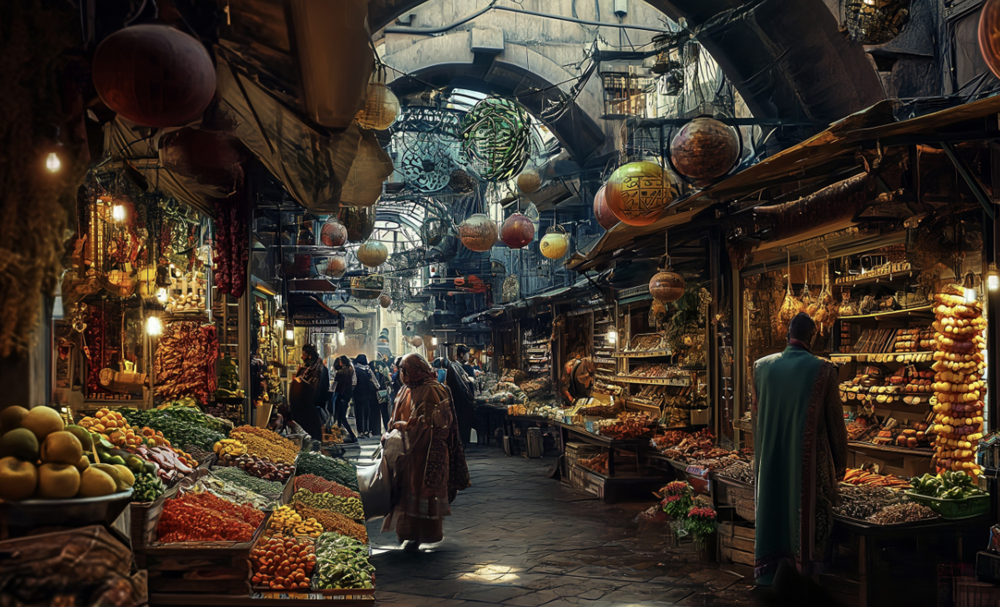
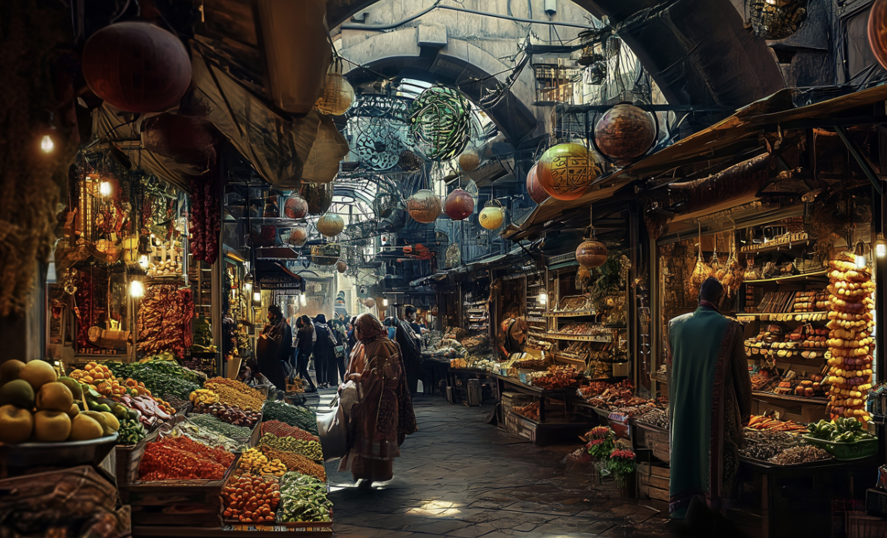

Pike Place Market is a public market in Seattle, Washington,
United States. It opened on August 17, 1907,
and is one of the
oldest continuously operated public farmers' markets in the United
States.
Overlooking the Elliott Bay waterfront on Puget Sound, it
serves as a place of business for many small farmers, craftspeople
and merchants.
I really like the merchants throwing fish?? KIinda
like a performance.
First image from:
https://www.google.com/url?sa=i&url=https%3A%2F%2Fwww.historylink.org%2Ffile%2F1602&psig=AOvVaw1_sWxdqbx0uSPscVIpl9yL&ust=1709783246256000&source=images&cd=vfe&opi=89978449&ved=0CBMQjRxqFwoTCPCj5pPd3oQDFQAAAAAdAAAAABAE
3rd image created using Mid-journey